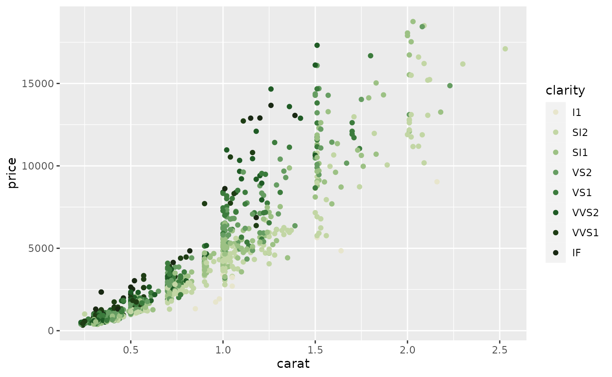
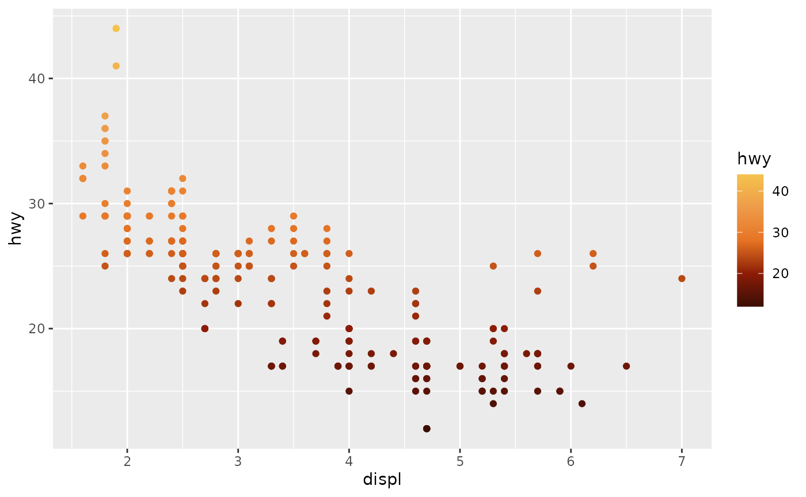
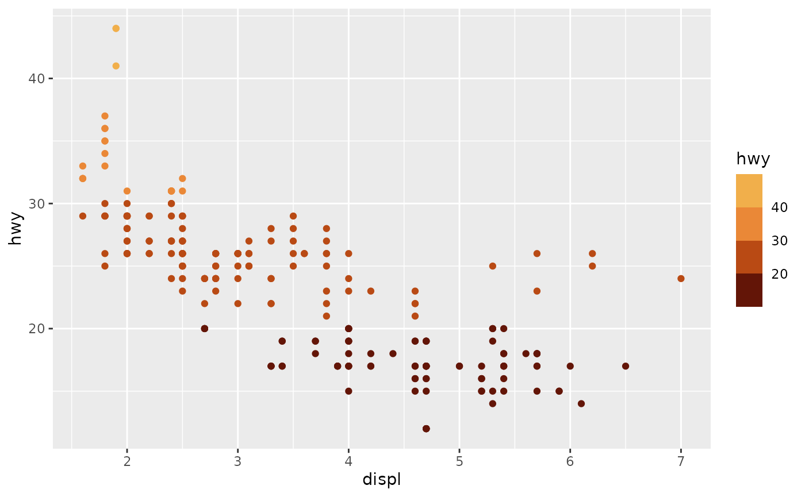
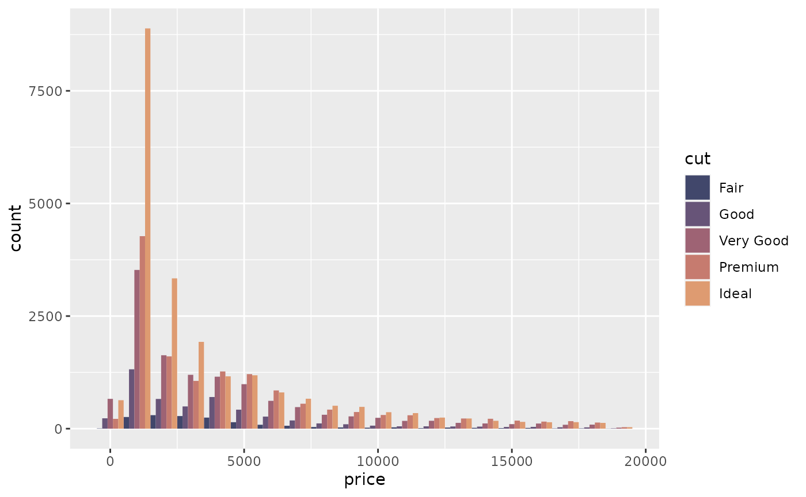
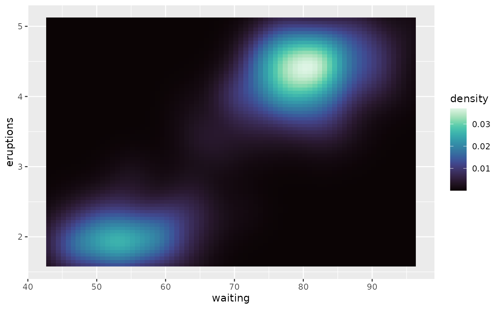
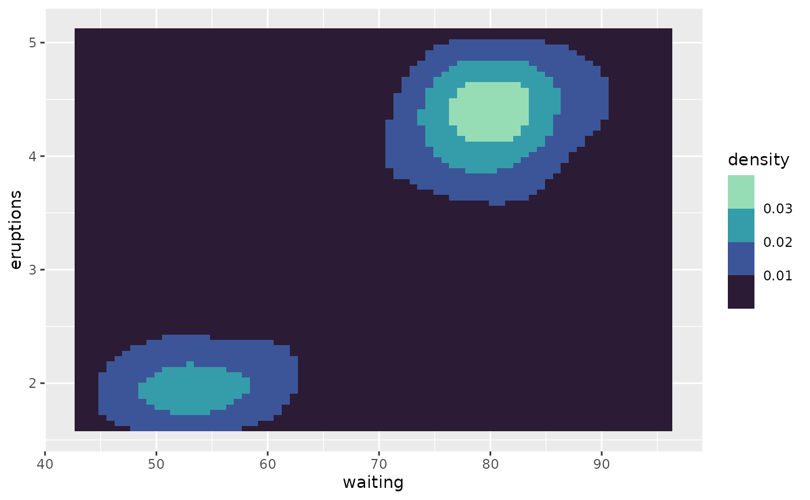
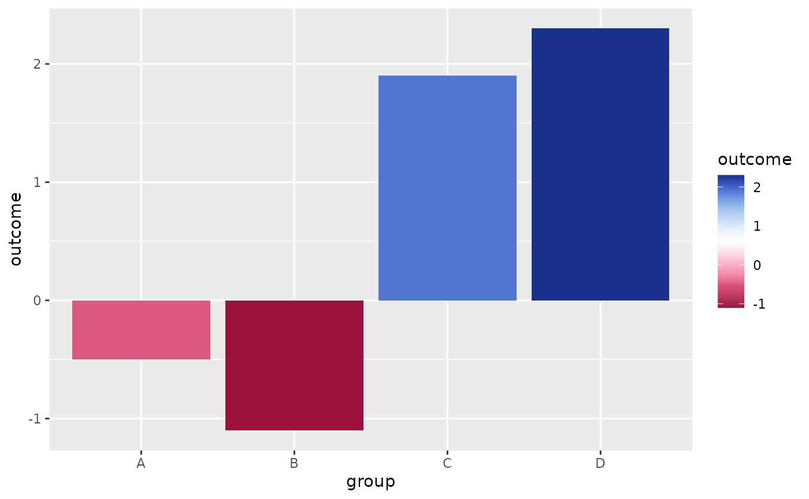
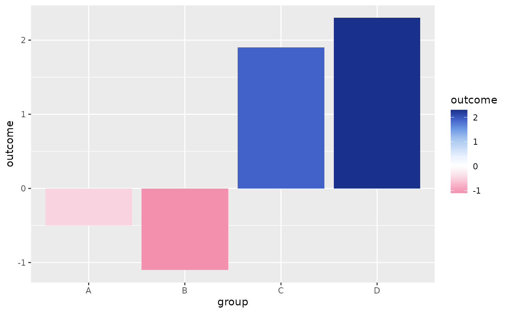

This vignette shows you how to use palettes as colour and fill scales with ggplot2.
Colour scales
For discrete colours use scale_colour_palette_d().
ggplot(diamonds[sample(nrow(diamonds), 1000), ], aes(carat, price)) +
geom_point(aes(colour = clarity)) +
scale_colour_palette_d(met_palettes$VanGogh3)
Continuous or binned colours can be used with continuous data. For
continuous colours use scale_colour_palette_c(). For binned
colours use scale_colour_palette_b().
hwy_mpg <- ggplot(mpg, aes(displ, hwy, colour = hwy)) +
geom_point()
hwy_mpg + scale_colour_palette_c(met_palettes$Greek)
hwy_mpg + scale_colour_palette_b(met_palettes$Greek)
Fill scales
For discrete fills use scale_fill_palette_d().
ggplot(diamonds, aes(x = price, fill = cut)) +
geom_histogram(position = "dodge", binwidth = 1000) +
scale_fill_palette_d(pnw_palettes$Sunset)
Continuous or binned fills can be used with continuous data. For
continuous fills use scale_fill_palette_c(). For binned
fills use scale_fill_palette_b().
eruptions <- ggplot(faithfuld, aes(waiting, eruptions, fill = density)) +
geom_tile()
eruptions + scale_fill_palette_c(viridis_palettes$mako)
eruptions + scale_fill_palette_b(viridis_palettes$mako)
Customizing scales
The scale_ functions can all pass arguments to the
appropriate scale constructors in ggplot2 if you need to control the
name, limits, breaks, labels, and so forth of colour and fill scales.
The arguments are passed with ... to the appropriate scale
constructor for each function:
-
ggplot2::discrete_scale()forscale_colour_palette_d()andscale_fill_palette_d() -
ggplot2::continuous_scale()forscale_colour_palette_c()andscale_fill_palette_c() -
ggplot2::binned_scale()forscale_colour_palette_b()andscale_fill_palette_b()
This is particularly useful when you need to change how colours are mapped to values in a scale. For example, a common problem when working with divergent colour palettes is getting the middle colour in a palette to align with a fixed value representing the mid-point of a continuous scale.
To demonstrate, say we have mean treatment outcome results from four groups in a clinical trial.
treatment_results <- data.frame(
group = LETTERS[1:4],
outcome = c(-0.5, -1.1, 1.9, 2.3)
)We want to plot the outcomes as a diverging bar chart with divergent fills. By default, the fill scale’s mid-point is the mean of the four groups, but we want it to be zero.
ggplot(treatment_results, aes(x = group, y = outcome, fill = outcome)) +
geom_col() +
scale_fill_palette_c(met_palettes$Benedictus)
We can use the rescaler argument in
ggplot2::continuous_scale(), which accepts a function used
to scale the input values to the range [0, 1], to scale the fill values
to have a mid-point of zero. For scaling the mid-point use
scales::rescale_mid().
ggplot(treatment_results, aes(x = group, y = outcome, fill = outcome)) +
geom_col() +
scale_fill_palette_c(
met_palettes$Benedictus,
rescaler = ~ rescale_mid(.x, mid = 0)
)